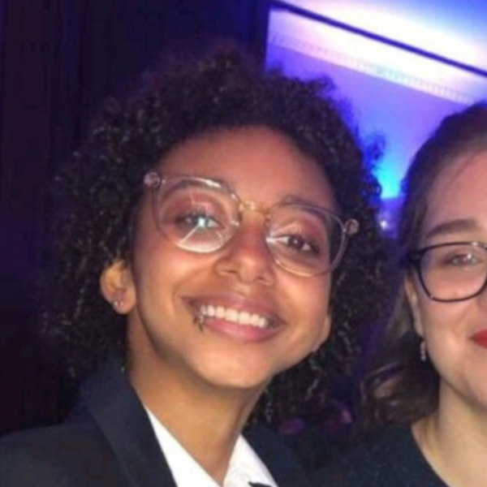

Jasmine Tarbard
Student/Freelance Developer
I am a first year BSc Computer Science student and freelance developer with a background in C, Java, Python and Visual Basic. I like to utilise my skills in both the front and back end of web development. Social and web applications are another favourite of mine. You can usually find me playing with API's and creating something unique in my spare time which keeps me busy when I am not on a project. C, python and html/css are my strengths. More about me...